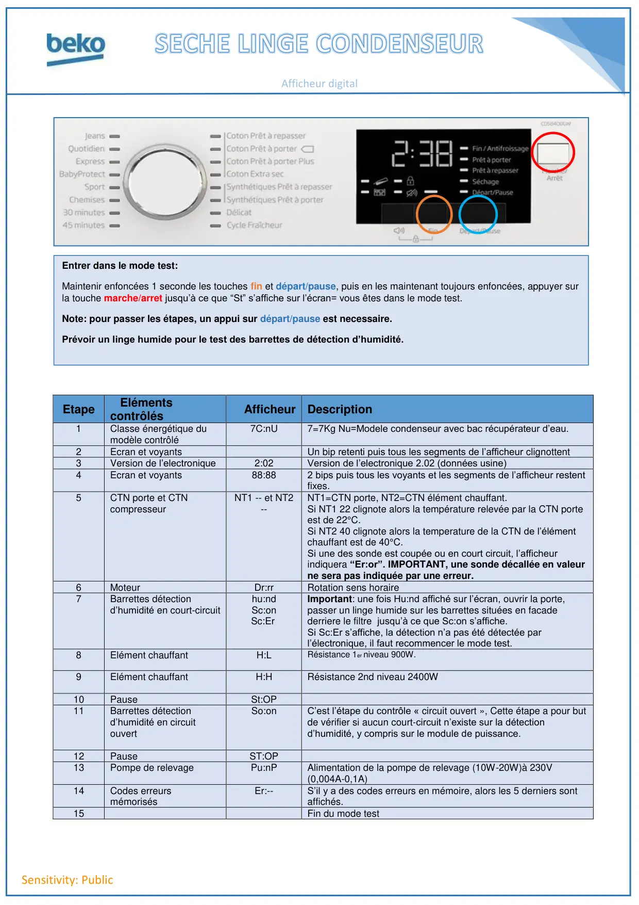
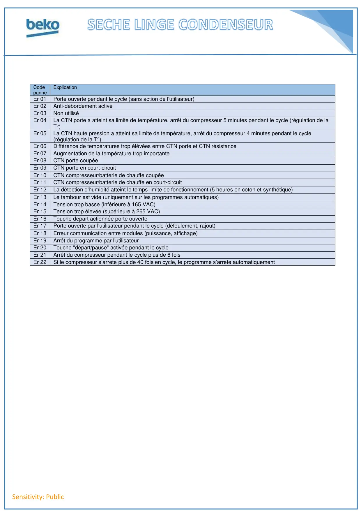

Prog Test seche linge Beko Condenseur Afficheur Digital

Sensitivity: PublicAfficheur digitalEtapeElémentscontrôlésAfficheur Description1Classe énergétique dumodèle contrôlé7C:nU7=7Kg Nu=Modele condenseur avec bac récupérateur d’eau.2Ecran et voyantsUn bip retenti puis tous les segments de l’afficheur clignottent3Version de l’electronique2:02Version de l’electronique 2.02 (données usine)4Ecran et voyants88:882 bips puis tous les voyants et les segments de l’afficheur restentfixes.5CTN porte et CTNcompresseurNT1 -- et NT2--NT1=CTN porte, NT2=CTN élément chauffant.Si NT1 22 clignote alors la température relevée par la CTN porteest de 22°C.Si NT2 40 clignote alors la temperature de la CTN de l’élémentchauffant est de 40°C.Si une des sonde est coupée ou en court circuit, l’afficheurindiquera “Er:or”. IMPORTANT, une sonde décallée en valeurne sera pas indiquée par une erreur.6MoteurDr:rrRotation sens horaire7Barrettes détectiond’humidité en court-circuithu:ndSc:onSc:ErImportant: une fois Hu:nd affiché sur l’écran, ouvrir la porte,passer un linge humide sur les barrettes situées en facadederriere le filtre jusqu’à ce que Sc:on s’affiche.Si Sc:Er s’affiche, la détection n’a pas été détectée parl’électronique, il faut recommencer le mode test.8Elément chauffantH:LRésistance 1er niveau 900W.9Elément chauffantH:HRésistance 2nd niveau 2400W10PauseSt:OP11Barrettes détectiond’humidité en circuitouvertSo:onC’est l’étape du contrôle « circuit ouvert », Cette étape a pour butde vérifier si aucun court-circuit n’existe sur la détectiond’humidité, y compris sur le module de puissance.12PauseST:OP13Pompe de relevagePu:nPAlimentation de la pompe de relevage (10W-20W)à 230V(0,004A-0,1A)14Codes erreursmémorisésEr:--S’il y a des codes erreurs en mémoire, alors les 5 derniers sontaffichés.15Fin du mode testEntrer dans le mode test:Maintenir enfoncées 1 seconde les touches fin et départ/pause, puis en les maintenant toujours enfoncées, appuyer surla touche marche/arret jusqu’à ce que “St” s’affiche sur l’écran= vous êtes dans le mode test.Note: pour passer les étapes, un appui sur départ/pause est necessaire.Prévoir un linge humide pour le test des barrettes de détection d’humidité.
1 / 2
Sensitivity: PublicCodepanneExplicationEr 01Porte ouverte pendant le cycle (sans action de l'utilisateur)Er 02Anti-débordement activéEr 03Non utiliséEr 04La CTN porte a atteint sa limite de température, arrêt du compresseur 5 minutes pendant le cycle (régulation de laT°)Er 05La CTN haute pression a atteint sa limite de température, arrêt du compresseur 4 minutes pendant le cycle(régulation de la T°)Er 06Différence de températures trop élévées entre CTN porte et CTN résistanceEr 07Augmentation de la température trop importanteEr 08CTN porte coupéeEr 09CTN porte en court-circuitEr 10CTN compresseur/batterie de chauffe coupéeEr 11CTN compresseur/batterie de chauffe en court-circuitEr 12La détection d'humidité atteint le temps limite de fonctionnement (5 heures en coton et synthétique)Er 13Le tambour est vide (uniquement sur les programmes automatiques)Er 14Tension trop basse (inférieure à 165 VAC)Er 15Tension trop élevée (supérieure à 265 VAC)Er 16Touche départ actionnée porte ouverteEr 17Porte ouverte par l'utilisateur pendant le cycle (défoulement, rajout)Er 18Erreur communication entre modules (puissance, affichage)Er 19Arrêt du programme par l'utilisateurEr 20Touche "départ/pause" activée pendant le cycleEr 21Arrêt du compresseur pendant le cycle plus de 6 foisEr 22Si le compresseur s’arrete plus de 40 fois en cycle, le programme s’arrete automatiquement
2 / 2